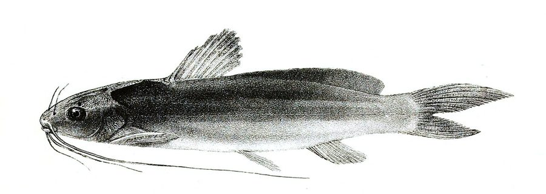

ब्लीकर्स मिस्टस मछलीBleeker's Mystus
Mystus bleekeri · Bagridae · FSH-0057

- Scientific name वैज्ञानिक नाम
- Mystus bleekeri (Day, 1877)
- Family कुल
- Bagridae
- Hindi हिंदी
- ब्लीकर्स मिस्टस मछली
- Local names स्थानीय नाम
- bleekers mystus, bleeker mystus, tengra, gol tengra, palwa
- Status here यहाँ की स्थिति
- native
- Movement आवागमन
- Resident, here all year
- Known from कहाँ दर्ज
- Others have published records from the wider Awadh–Purvanchal plain, none yet from Basti–Ayodhya अवध–पूर्वांचल से दूसरों के प्रकाशित अभिलेख, बस्ती–अयोध्या से अभी नहीं
- IUCN IUCN
- not evaluated
- Review समीक्षा
- not yet reviewed
When to look कब देखें
Present all year. साल भर मौजूद।
Uses and possibilities उपयोग और संभावनाएँ
Drawn from the documented uses in the profile below, where each is labelled traditional, current or a research lead. All uses →
Tell it apart from इनसे अलग पहचानें
ब्लीकर्स मिस्टस मछली / Bleeker's Mystus
Mystus bleekeri (Day, 1877) — Bagridae
ब्लीकर्स मिस्टस मछली — नदियों, नालों और दलदली तालाबों में पाई जाने वाली एक छोटी और बहुत लोकप्रिय देसी कैटफिश (टेंगरा) है। इसका शरीर बिना छिलके का, चिकना और भूरा-चांदी जैसा होता है। इसके मुँह पर आठ मूंछें होती हैं, जिनमें से ऊपरी मूंछें बहुत लंबी होकर पेट के पंख तक जाती हैं। इसकी सबसे बड़ी पहचान इसकी पीठ पर मौजूद बहुत लंबा चर्बीदार पंख (adipose fin) है। यह तलहटी के कीचड़ में कीड़े और छोटी मछलियां खाती है और ग्रामीण क्षेत्रों में भोजन के लिए खूब पकड़ी जाती है।
Quick Identification त्वरित पहचान
| Feature | Description |
|---|---|
| Size | Small freshwater bagrid catfish; reaches about 17.7 cm TL (Froese & Pauly 2025) |
| Body Shape | Moderately elongate, compressed laterally, completely scaleless and smooth (Day 1877) |
| Mouth & Barbels | Terminal mouth; eight barbels; maxillary barbels reach base of anal fin (Talwar & Jhingran 1991) |
| Adipose Fin | Remarkably long, originating immediately behind dorsal fin with barely any gap (Day 1877) |
| Colour Pattern | Brownish-grey dorsally with two light longitudinal bands and a dark shoulder blotch (Talwar & Jhingran 1991) |
| Dorsal Spine | Slender dorsal spine, smooth or finely serrated on its inner edge (Talwar & Jhingran 1991) |
| Anal Fin | Short, carrying 9 to 10 branched rays (Talwar & Jhingran 1991) |
Field tip: Look in weed-edged shallows and river mud banks. A small scaleless catfish with eight barbels whose maxillary pair reaches the anal fin, possessing an exceptionally long adipose fin extending across almost the entire posterior back, is Mystus bleekeri.
हिंदी: यह टेंगरा जाति की छोटी मछली है। इसके मुंह पर आठ मूंछें होती हैं और इसकी पीठ पर एक बहुत लंबा चर्बीदार पंख होता है जो कांटेदार पंख के ठीक पीछे से शुरू होता है।
Morphology आकारिकी
Size as given by FishBase (Froese & Pauly 2025):
| Measurement | Range | Source |
|---|---|---|
| Maximum length | 17.7 cm TL | Froese & Pauly (2025), FishBase |
Adult description:
Mystus bleekeri has a moderately elongate, robust body that is compressed towards the caudal peduncle (Day 1877). The head is depressed, comprising about one-fourth of the standard length, with an upper surface that is smooth or slightly rugose (Talwar & Jhingran 1991). The snout is obtuse and rounded; eyes are moderately large and covered with a thin translucent skin (Day 1877). The mouth is small, transverse, and terminal, with jaws of equal length (Talwar & Jhingran 1991). Teeth are villiform and arranged in a continuous, curved band across the palate (Jayaram 2006).
Eight barbels are present: two nasal barbels reaching the middle of the head; two slender maxillary barbels extending backwards to the origin of the anal fin; two outer mandibular barbels reaching the pectoral fin base; and two inner mandibular barbels that are shorter (Talwar & Jhingran 1991).
The dorsal fin is supported by a slender spine and 7–8 branched rays (Talwar & Jhingran 1991). The defining morphological hallmark of this species is its exceptionally long adipose fin, which originates almost immediately behind the base of the rayed dorsal fin, separated only by a tiny interspace, and extends continuously along the back to just ahead of the caudal fin (Day 1877). The pectoral fins have a strong spine serrated internally with 10 to 14 sharp teeth (Talwar & Jhingran 1991). The anal fin is short, containing 9 to 10 branched rays. The caudal fin is deeply forked with pointed, unequal lobes (Day 1877).
Coloration is brownish-grey or olive on the back, fading to dull yellowish-white on the abdomen (Talwar & Jhingran 1991). The flanks are marked with two faint, pale longitudinal bands—one situated above the lateral line and the other below it (Day 1877). A distinct dark oval blotch is present behind the operculum above the pectoral fin (Talwar & Jhingran 1991).
हिंदी: इसका शरीर लगभग 17.7 सेमी तक लंबा और बिना छिलके का होता है। ऊपरी मूंछें लंबी होकर पेट के पंख तक जाती हैं। इसकी पीठ पर बहुत लंबा चर्बीदार पंख होता है। शरीर का रंग भूरा-स्लेटी होता है।
Behaviour & Ecology व्यवहार और पारिस्थितिकी
Bleeker's Mystus is a nocturnal and crepuscular benthic catfish adapted to diverse freshwater habitats (Talwar & Jhingran 1991). It inhabits flowing rivers, perennial canals, oxbow lakes (tals), and weed-fringed village ponds with soft mud or silt substrates.
During the day, individuals hide in muddy crevices, under overhanging roots, or beneath dense mats of Eichhornia and Hydrilla (Jayaram 2006). At nightfall, they become active, roaming across the pond or river floor in loose feeding groups (Talwar & Jhingran 1991). Using their sensitive barbels and chemoreceptors, they probe into the surface layer of bottom silt to detect hidden midge larvae, worms, and small crustaceans. During the monsoon season, adults move onto inundated floodplains to forage and spawn, returning to permanent waters as the dry season approaches (Jayaram 2006).
हिंदी: यह रात के समय घूमने वाली मछली है। दिन में यह कीचड़ और जलीय पौधों की जड़ों में छिपी रहती है। रात में अपनी मूंछों की मदद से यह तलहटी में कीड़े और छोटी मछलियां खोजती है।
Life Cycle / Phenology जीवन चक्र
Seasonal phenology in northern Indian alluvial waters across the agricultural year (Talwar & Jhingran 1991; Jayaram 2006):
| Season / Month | Stage | Field Observation |
|---|---|---|
| June–July (Monsoon onset) | Spawning run | Adults migrate to inundated grassy margins and flooded ditches (Talwar & Jhingran 1991) |
| July–August (Kharif peak) | Spawning & egg deposition | Pairs spawn among submerged weed roots in shallow floodwaters (Jayaram 2006) |
| September–November (Post-monsoon) | Juvenile growth | Fingerlings feed actively on zooplankton and midge larvae in tals (Talwar & Jhingran 1991) |
| December–February (Rabi winter) | Sub-adult congregation | Groups shelter in deep mud holes of perennial rivers and tanks |
| March–May (Summer / Zaid) | Active feeding | Heavy grazing on aquatic insects as temperatures rise (Jayaram 2006) |
Spawning coincides with the southwest monsoon rains (Talwar & Jhingran 1991). Ripe adults move into shallow flooded grasslands and paddy drains. Spawning takes place at night among submerged vegetation. Females deposit small, adhesive yellowish-brown eggs that cling to aquatic plant roots. The eggs hatch after a few days into tiny larvae that absorb their yolk sacs before actively feeding on microscopic rotifers and plankton (Jayaram 2006).
हिंदी: मानसून में पानी भरने पर यह मछली उथले किनारों और घास में अंडे देती है। कुछ दिनों में अंडों से बच्चे निकलकर पौधों की जड़ों में छिप जाते हैं और तेजी से बड़े होते हैं।
Diet and Feeding Behaviour आहार
Mystus bleekeri is an opportunistic carnivorous and detritivorous bottom feeder (Talwar & Jhingran 1991):
Natural diet components:
- Aquatic insects and larvae, including chironomid midges, caddisfly larvae, and odonate naiads (Jayaram 2006).
- Small freshwater crustaceans, including water fleas (Daphnia), ostracods, and tiny prawns (Talwar & Jhingran 1991).
- Small forage fish fry and minnows ambushed in the dark.
- Benthic oligochaete worms and small molluscs extracted from mud.
- Decomposing organic matter and filamentous algae browsed incidentally from silt.
हिंदी: यह मांसाहारी मछली है जो तलहटी के कीचड़ में मिलने वाले कीड़ों, मच्छरों के लार्वा, छोटे झींगों और छोटी मछलियों के बच्चों को खाती है।
Predators / Natural Enemies शत्रु
Documented natural predators in northern Indian alluvial freshwater systems:
- Piscivorous fishes: Large river predators like Wallago attu (Striped Catfish), Channa marulius (Great Snakehead), and Channa punctata (Spotted Snakehead) hunt mystus catfishes.
- Wading birds: Night herons, pond herons, and egrets spear adults foraging in shallow mud banks.
- Water snakes: Checkered keelbacks pursue them among shoreline weeds.
- Otters: Hunt catfishes in deep perennial river pools.
हिंदी: बोआल, सौर, बगुले और पानी के साँप इस मछली का शिकार करते हैं। इसके कांटे इसे कुछ हद तक शिकारियों से बचाते हैं।
Agricultural / Human Relevance कृषि प्रासंगिकता
Nutritional and market value: Bleeker's Mystus (commonly known as tengra or gol tengra) is a popular and nutritious small indigenous food fish across northern and eastern India. Harvested in substantial quantities from wild rivers, tals, and village tanks using bamboo traps and cast nets, it is sold fresh in rural markets. Its flesh is tender, flavorful, and highly regarded by rural consumers, providing vital animal protein, calcium, iron, and essential fatty acids to local diets.
Agricultural wetland role: In flooded rice paddies, wild schools consume pest insects and mosquito larvae, aiding natural biological control in rural watersheds (Talwar & Jhingran 1991).
Traditional: Cooked into traditional spicy fish curries and valued as a nourishing food fish in Awadh.
Today: Sold fresh in daily village fish markets (haats) as an affordable, popular small catfish.
Research direction (a lead, not a result): Assessing captive breeding and stocking protocols for Mystus bleekeri in community village ponds.
हिंदी: यह टेंगरा मछली के रूप में बहुत प्रसिद्ध और स्वादिष्ट देसी मछली है। ग्रामीण बाजारों में इसकी मांग हमेशा बनी रहती है। यह खेतों के कीड़ों को खाकर किसानों की मदद करती है।
Expected Locally स्थानीय रूप से अपेक्षित
Not a field record. Written from published accounts for eastern Uttar Pradesh. No confirmed local sighting yet — if you have seen it, that is what the atlas needs.
अभी तक स्थानीय पुष्टि नहीं। यह विवरण प्रकाशित स्रोतों से है, किसी अवलोकन से नहीं।
Bleeker's Mystus is expected across eastern Uttar Pradesh in perennial rivers, oxbow lakes (tals), weed-rich village tanks, and major canal networks. Look in quiet shallows and muddy weed beds from August through December. GBIF holds published records from the wider Awadh–Purvanchal plain, none yet from Basti–Ayodhya. A voucher photograph showing the eight barbels, long adipose fin with almost no interspace, and dark shoulder blotch, submitted via the About page, would confirm the first local documentation for the project area.
Distribution वितरण
Global range: Native to the northern and central Indian subcontinent, distributed across India, Pakistan, Nepal, Bangladesh, and Myanmar (Talwar & Jhingran 1991).
In India: Found throughout the Indus, Ganges, Brahmaputra, and Mahanadi river basins, from foothill streams to the plains (Menon 1999).
In Uttar Pradesh: Recorded throughout the Ganges, Ghaghara, Rapti, Gomti, and Sarda river networks and associated floodplain depressions.
In Basti district / eastern UP: Expected as a resident native species in the Ghaghara, Kuwano, and Ami river corridors and major oxbow wetlands.
हिंदी: यह भारत, पाकिस्तान, नेपाल और बांग्लादेश की प्रमुख नदियों में पाई जाती है। उत्तर प्रदेश में गंगा और घाघरा नदी प्रणालियों में यह सामान्य रूप से उपस्थित है।
Research Questions शोध प्रश्न
- How do seasonal flood barriers affect the downstream dispersal of Mystus bleekeri in the Kuwano basin? / कुआनो नदी में पानी के बहाव पर नियंत्रण का इस मछली के फैलाव पर क्या असर पड़ता है?
- What is the impact of heavy pesticide runoffs from adjacent rice paddies on benthic food availability?
- What are the specific thermal limits of Mystus bleekeri in drying village ponds during summer heatwaves? / गर्मियों में तालाबों के सूखने पर यह मछली कितने तापमान को सहन कर सकती है?
- Can community-managed sanctuaries in deep oxbow pools protect breeding brooders from dry-season overfishing?
- How does the presence of invasive African catfish (Clarias gariepinus) impact native Mystus bleekeri populations?
Similar Species मिलती-जुलती प्रजातियाँ
| Species | How to tell apart | हिंदी | |
|---|---|---|---|
| Mystus tengara ([[tengra\ | Tengra]]) | Body marked with 4–5 distinct longitudinal stripes; adipose fin noticeably shorter | टेंगरा — शरीर पर चार-पांच स्पष्ट धारियाँ होती हैं और चर्बी वाला पंख छोटा होता है |
| Mystus vittatus ([[striped_catfish\ | Striped Catfish]]) | Adipose fin much shorter, separated from rayed dorsal by a distinct gap; body has multiple stripes | स्ट्राइप्ड कैटफिश — चर्बी वाला पंख छोटा होता है और पीठ के दोनों पंखों के बीच खाली जगह होती है |
| Mystus cavasius ([[gangetic_mystus\ | Gangetic Mystus]]) | Maxillary barbels much longer, extending past the caudal fin tip | गैंगेटिक मिस्टस — मूंछें बहुत लंबी होकर पूँछ के सिरे को भी पार कर जाती हैं |
Field rule: A small scaleless bagrid catfish with eight barbels, whose maxillary barbels reach the anal fin, and possessing an exceptionally long adipose fin originating immediately behind the dorsal fin, is Mystus bleekeri.
हिंदी: स्ट्राइप्ड कैटफिश और साधारण टेंगरा के चर्बीदार पंख छोटे होते हैं, जबकि ब्लीकर्स मिस्टस का चर्बीदार पंख बहुत लंबा होता है और कांटेदार पंख के ठीक पीछे से शुरू होता है।
Taxonomy & Classification वर्गीकरण
Original description. Described by Francis Day in 1877 as Macrones bleekeri in The Fishes of India, page 451, plate 101, figure 1. Type locality: Sind, Jamuna, upper Ganges, and Burma.
Subspecies. Monotypic — no subspecies are recognized across its continental range.
Family and order placement. Order Siluriformes, family Bagridae. The genus Mystus Scopoli, 1777, comprises small-to-medium Old World bagrid catfishes.
Phylogenetic notes. Mystus bleekeri is named in honor of the Dutch ichthyologist Pieter Bleeker. It is distinguished from other Indian bagrids by its exceptionally long adipose fin with almost no interspace behind the dorsal fin (Talwar & Jhingran 1991).
IUCN status rationale. Not evaluated (NE) on the global IUCN Red List of Threatened Species. It maintains widespread, abundant wild populations across northern South Asian freshwater systems.
हिंदी: इसका वैज्ञानिक नाम Mystus bleekeri है और यह Bagridae परिवार की सदस्य है। इसका नाम वैज्ञानिक पीटर ब्लीकर के सम्मान में रखा गया है।
Photo Gallery फोटो गैलरी
No photos yet — add field photos to media/species/bleekers_mystus/ and run node scripts/sync_photos.js.
Photos needed आवश्यक फोटो
- [ ] Lateral view of adult specimen showing long adipose fin and faint flank stripes (लंबे चर्बीदार पंख और शरीर की बनावट की तस्वीर)
- [ ] Close-up of head showing the eight barbels and maxillary barbel length (सिर और आठ मूंछों का स्पष्ट दृश्य)
- [ ] View of dorsal fin and immediate origin of the adipose fin (पीठ के दोनों पंखों के मिलन का दृश्य)
- [ ] Freshly collected specimen from a local fish landing site (स्थानीय बाजार से ताजा पकड़ी गई मछली)
References संदर्भ
- Day, F. (1877). The Fishes of India; being a natural history of the fishes known to inhabit the seas and fresh waters of India, Burma, and Ceylon, Part 3. Bernard Quaritch, London, p. 451, pl. 101, fig. 1.
- Talwar, P. K. & Jhingran, A. G. (1991). Inland Fishes of India and Adjacent Territories, Vol. 2. Oxford & IBH Publishing Co., New Delhi, pp. 558–559.
- Menon, A. G. K. (1999). Check list - fresh water fishes of India. Records of the Zoological Survey of India, Occasional Paper No. 175, p. 196.
- Jayaram, K. C. (2006). Catfishes of India. Narendera Publishing House, Delhi, pp. 42–44.
- Froese, R. & Pauly, D. (Eds.) (2025). FishBase. World Wide Web electronic publication.
- GBIF Occurrence Data — Mystus bleekeri, India (2025).
Source file: species/fauna/fish/bleekers_mystus.md